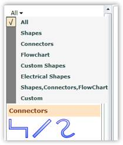
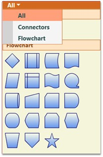

A Symbol Palette filter can be added to the Symbol Palette control, using the SymbolFilters property, so that only desired Symbol Palette groups get displayed. The SetFilterIndexes property is used to specify the index value of the filters for which the group is to be displayed. The filter names are specified integer values, with the first filter index starting from 0. Based on the filter indexes specified for that particular group, the visibility of the group is controlled. So the group gets displayed only when any of the specified filter names are selected.
The following lines of code can be used to specify the Symbol Palette filter of the Symbol Palette Group.
|
[C#]
SymbolPaletteFilter sfilter = new SymbolPaletteFilter(); sfilter.Label = "Custom"; diagramControl1.SymbolPalette.SymbolFilters.Add(sfilter); //SymbolPaletteGroup creates a group and assigns a specific filter index. SymbolPaletteGroup s = new SymbolPaletteGroup(); s.HeaderName = "Custom"; SymbolPalette.SetFilterIndexes(s, new List<int>() { 0,7 }); diagramControl1.SymbolPalette.SymbolGroups.Add(s); |
|
[VB]
Dim sfilter As New SymbolPaletteFilter() sfilter.Label = "Custom" diagramControl1.SymbolPalette.SymbolFilters.Add(sfilter) 'SymbolPaletteGroup creates a group and assigns a specific filter index. Dim s As New SymbolPaletteGroup() s.HeaderName = "Custom" SymbolPalette.SetFilterIndexes(s, New List(Of Integer) (New Integer() {0, 7})) diagramControl1.SymbolPalette.SymbolGroups.Add(s) |
This adds a new empty group named "Custom" and creates a filter for it.

Figure 150: Symbol Palette Filter
The SetFilterIndexes property specifies the index value for the group as 0,4, which implies that this group should be displayed when the filter index is 0 ("All") or 4 ("Custom").
Remove SymbolPaletteFilters
Like SymbolPaletteGroups, the SymbolPaletteFilters are also indexed from 0. The index 0 refers to the filter All. The index 1 refers to the filter Shapes and so on. The following table lists the filters with their index numbers.
|
Filter name |
Index |
|
All |
0 |
|
Shapes |
1 |
|
Connectors |
2 |
|
Flowchart |
3 |
|
Custom Shapes |
4 |
|
Electrical Shapes |
5 |
a) Removing filters and groups named Shapes, Custom Shapes and Electrical Shapes
Use the following code to remove the filters and groups named Shapes, Custom Shapes and Electrical Shapes:
|
[C#]
DiagramControl diagramControl = new DiagramControl(); diagramControl.SymbolPalette.SymbolGroups.Remove(diagramControl.SymbolPalette.SymbolGroups[4]); diagramControl.SymbolPalette.SymbolGroups.Remove(diagramControl.SymbolPalette.SymbolGroups[3]); diagramControl.SymbolPalette.SymbolGroups.Remove(diagramControl.SymbolPalette.SymbolGroups[0]);
diagramControl.SymbolPalette.SymbolFilters.Remove(diagramControl.SymbolPalette.SymbolFilters[5]); diagramControl.SymbolPalette.SymbolFilters.Remove(diagramControl.SymbolPalette.SymbolFilters[4]); diagramControl.SymbolPalette.SymbolFilters.Remove(diagramControl.SymbolPalette.SymbolFilters[1]); |
|
[VB]
Dim diagramControl As New DiagramControl() diagramControl.SymbolPalette.SymbolGroups.Remove(diagramControl.SymbolPalette.SymbolGroups(4)) diagramControl.SymbolPalette.SymbolGroups.Remove(diagramControl.SymbolPalette.SymbolGroups(3)) diagramControl.SymbolPalette.SymbolGroups.Remove(diagramControl.SymbolPalette.SymbolGroups(0))
diagramControl.SymbolPalette.SymbolFilters.Remove(diagramControl.SymbolPalette.SymbolFilters(5)) diagramControl.SymbolPalette.SymbolFilters.Remove(diagramControl.SymbolPalette.SymbolFilters(4)) diagramControl.SymbolPalette.SymbolFilters.Remove(diagramControl.SymbolPalette.SymbolFilters(1)) |
Run the application. The following output is displayed and the groups and filters are removed.

Figure 151: Palette with Groups and Filters removed